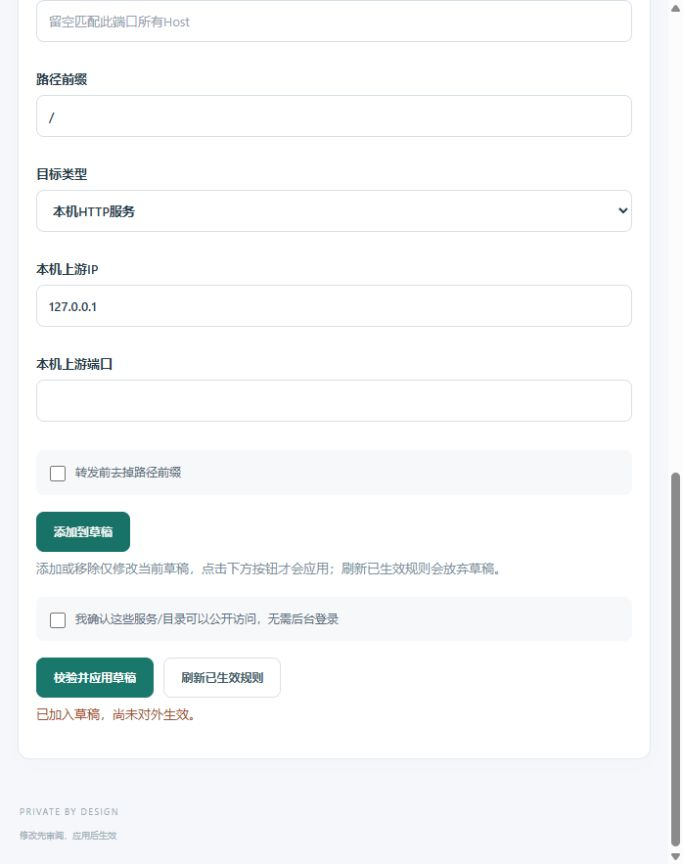

当前最终契约
已在来源会话独立核对所有者选择：使用 https://qin-xin.top/futures，80自动跳转HTTPS，保留完整/futures路径和查询参数，采用Next.js原生basePath。转发目标为 http://127.0.0.1:3030/futures；不剥离前缀。后端会话负责重建并只更新Web，在它给出就绪证据前不应用新路由。现有8001先保留证据，替代路径验收后撤销；不再进行8001公网排查。
独立现场核验
2026-11-12，修订18，无待完成事务，仅有8001规则。HTTP /futures及/futures/login均返回308并保留路径跳转到对应HTTPS地址。HTTPS根站点、/futures、/futures/login及/futures-other目前均返回同一默认欢迎页：没有现有业务规则占用/futures。
网关现有能力与边界
| 能力 | 实测与实现 |
|---|---|
| 保留前缀 | strip_prefix=false，/futures/login?next=overview原样发送；已有HTTPS网站路径规则，无需新增网关协议能力。 |
| 剥离前缀 | strip_prefix=true生成受控rewrite；/futures及/futures/映射/，/futures/login映射/login；查询串、POST方法和正文保留。最终方案不使用此项。 |
| 路径边界 | 只匹配/futures与/futures/*，不匹配/futures-other；更长的路径规则优先。 |
| 同源与流式 | Host保留，TLS入口提供可信X-Forwarded-Host及X-Forwarded-Proto；Cookie、POST和流式响应已在真实Caddy测试中核验。 |
| 上游响应 | 不改写HTML/JS资源地址、Location、Cookie Path；没有通用X-Forwarded-Prefix注入。测试证明上游Location=/login和Path=/会原样返回，不能把剥离前缀等同于Next.js已适配。 |
证据对应internal/gateway/compile.go的精确路径匹配和受控rewrite，以及integration_test.go、prefix_integration_test.go的真实网络断言。应用镜像0349da9已通过完整30项CI；新增路径契约测试另在隔离Caddy上执行，不声称它已包含在此前CI中。
待应用规则
{
"name": "期货回测与执行 Web",
"port": 443,
"host": "qin-xin.top",
"path": "/futures",
"kind": "proxy",
"upstream_ip": "127.0.0.1",
"upstream_port": 3030,
"https": true,
"strip_prefix": false,
"browse": false
}保留现有根站点与所有其他路径，不添加全局/_next、/login或/api代理。80继续由既有跳转承载，不增加新监听。草稿不剥离前缀；规则随后已通过近期双因素会话正式应用为修订20。保留原草稿截图用于追溯。

实施顺序与验收
- 等待并独立复核后端/futures/login、/futures/api/overview、带前缀静态资源、登录跳转与Cookie范围就绪；不接触后端部署。
- 通过近期双因素后台会话追加这一条规则，保留8001至替代路径验收完成。
- 验证正常TLS、80跳转、匿名401、错误口令和跨站拒绝；比较根欢迎页、/futures-other及其他网关服务与变更前一致。
- 后端会话独立完成公网正式登录、退出与引擎数据核验，再撤销8001规则。
- 以最终运行镜像与路径清单重新开始完整24小时；分钟检查额外覆盖/futures/login与/futures/api/overview。
修订20已应用/futures；公网入口307转/futures/login，登录页和8个静态资源200，匿名API401。真实multipart错误口令303回同源/futures/login?error=1且无会话Cookie，跨来源请求500且无会话Cookie；根页与相似路径的欢迎页散列均与变更前一致。所有者已完成正式登录、账户/引擎数据和退出验收；修订24已撤销8001并停止监听。
生产路径已生效